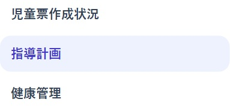
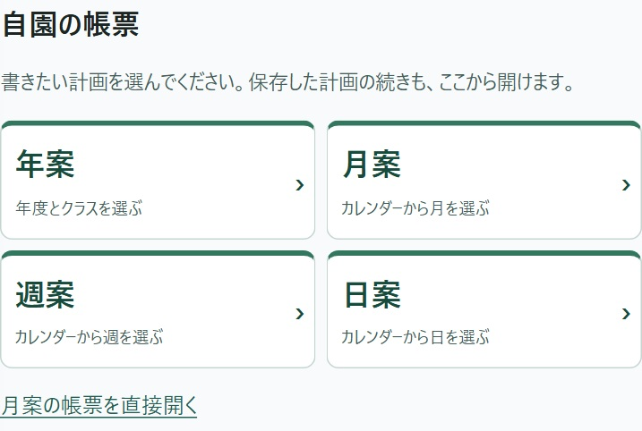
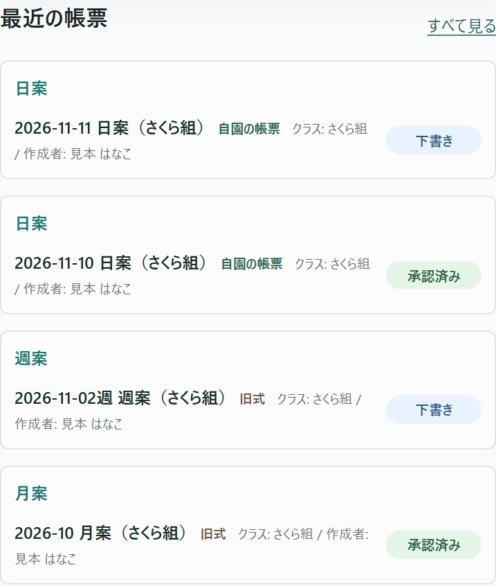
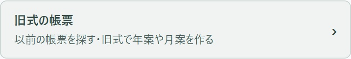
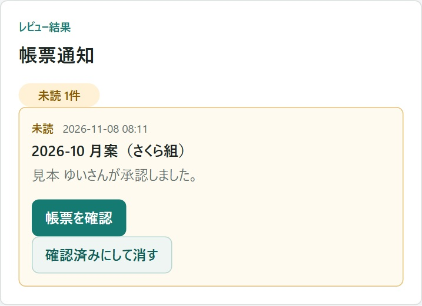
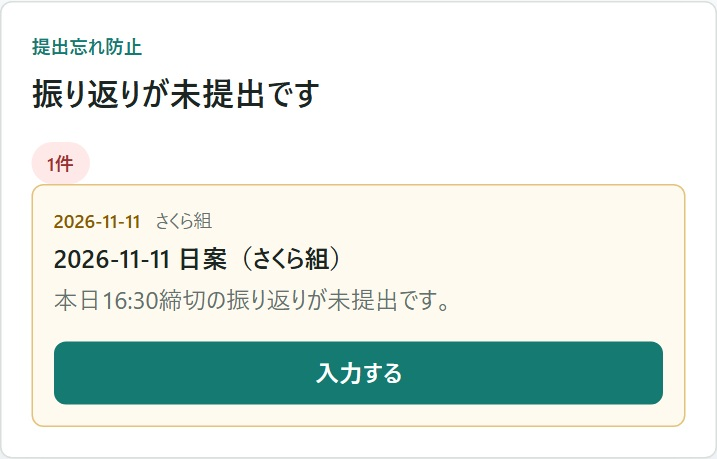

職員メニューの「指導計画」を押します。スマートフォンでは、先に画面左上の「メニュー」を押します。
ホームの「よく使う機能」にある「指導計画」からも、同じ画面を開けます。
これから書くときは「自園の帳票」から、前に書いたものを探すときは「最近の帳票」から始めます。画像は架空のクラスの例です。押すと大きく見られます。

職員メニューの「指導計画」を押します。スマートフォンでは、先に画面左上の「メニュー」を押します。
ホームの「よく使う機能」にある「指導計画」からも、同じ画面を開けます。

画面の上にある「自園の帳票」で、書きたい期間を選びます。
月案や週案では、選んだ期間に園の帳票があると「自園の帳票を開く」と出ます。続きを書くときは、その帳票を開きます。

画面を下へ動かすと「最近の帳票」があります。日付とクラスを確かめて、読みたい行を押します。
見つからなければ、見出しの横の「すべて見る」を押します。帳票の名前やクラスで探せます。
帳票一覧で書きかけを探す手順へ
以前の様式で書いた年案・月案・週案を見るときは、4つの入口の下にある「旧式の帳票」を押します。
旧式の帳票を開く手順へ
確認を頼んだ帳票に返事が届くと、「帳票通知」に結果が出ます。帳票の名前を見て、「帳票を確認」を押します。
結果を読み終えたら「確認済みにして消す」で、この通知を片づけられます。

日付とクラスを確かめて「入力する」を押します。その日の日案の振り返り欄が開きます。